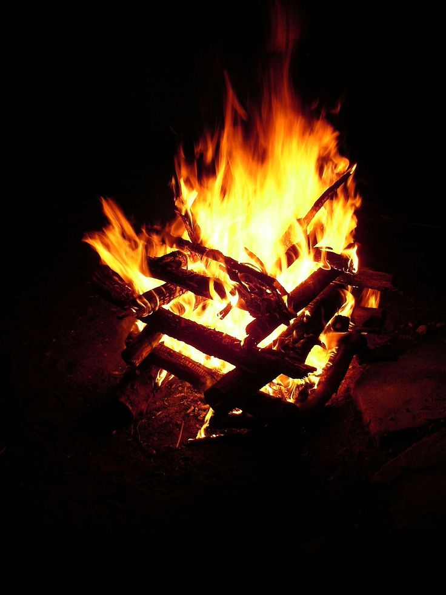
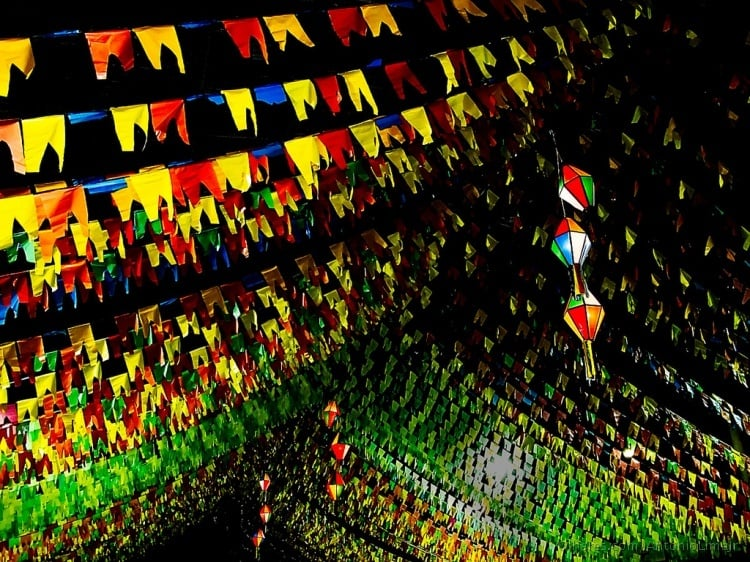
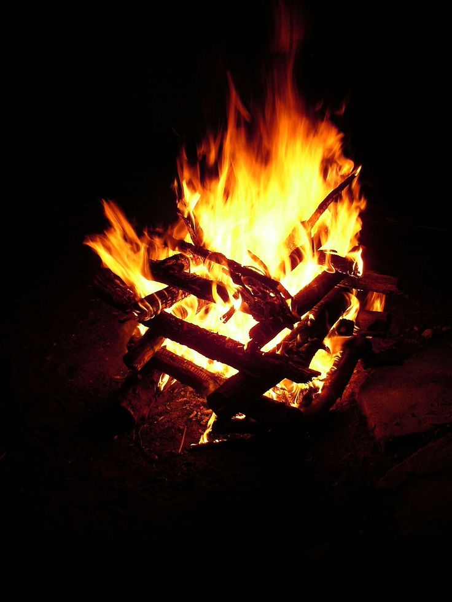
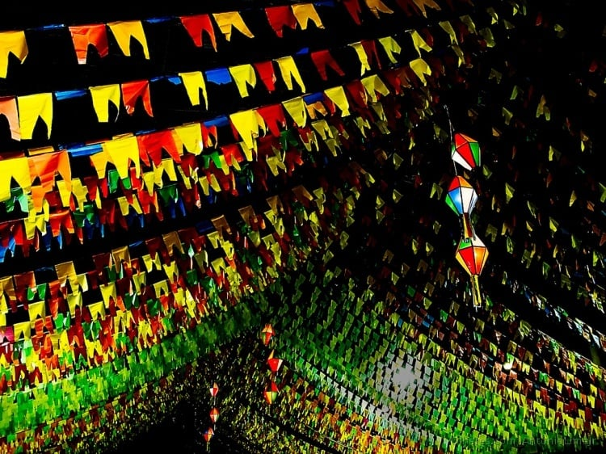

Festa Junina 🎉
A Cultura da Festa Junina
A Festa Junina é uma tradicional celebração brasileira que ocorre no mês de junho, com raízes na cultura portuguesa e influência das festas rurais nordestinas. É marcada por danças típicas, comidas deliciosas, fogueiras e muita música. Esta festa é uma homenagem a santos católicos como São João, São Pedro e Santo Antônio.
Tradições Típicas
As festividades incluem a quadrilha caipira, a dança típica onde os participantes vestem roupas coloridas e simulam um casamento caipira. As fogueiras iluminam as noites e as bandeirinhas coloridas decoram ruas e praças.
 



Comidas Típicas
Um dos grandes prazeres da Festa Junina são as comidas típicas, baseadas em milho, canjica, pamonha e bolo de fubá. Além disso, doces como pé-de-moleque, cocada e quentão são indispensáveis.